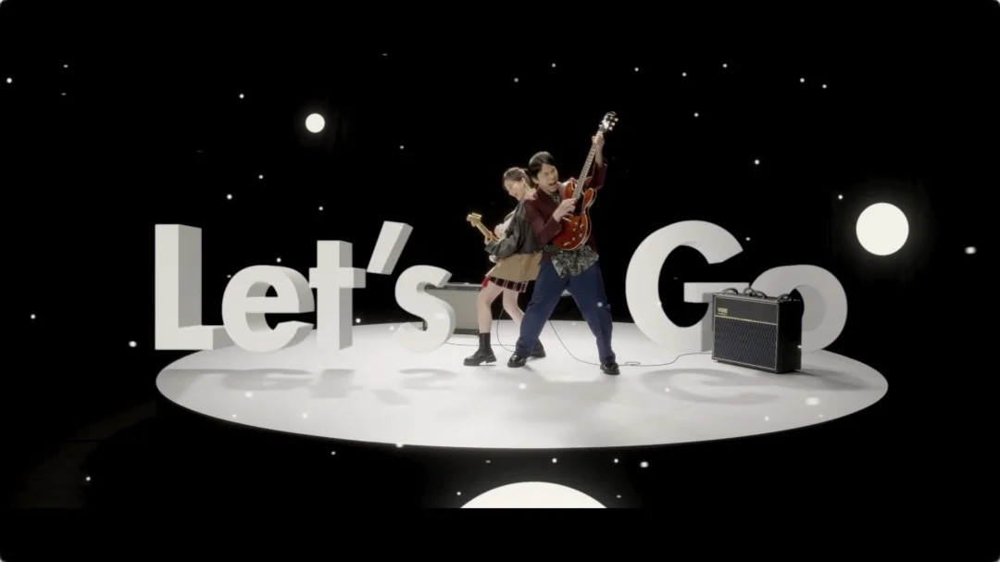

PRODUCTION STAFF
ハマいく「love10」Music Video

.
【PA work】
ハマいく「love10」Music Video
制作進行として携わらせていただきました
ーーーーー
Director of photography：Mami Koyama
Camera Assistant：Yuki Yoshide, Ryuji Fukuda
Lighting Director：Keisuke Ikeda
Lighting Assistant：Kazuhiro Fukuda
Stylist：Noriko Sugimoto
Hair & Make-up (Ryuichi Hamaie)：Yoko Fujii
Hair & Make-up (Erika Ikuta)：Nozomi Kawashima(io)
Turntable：FLAT Ltd. (Jun Tanaka, Yuji Tanaka, Kouta Tanaka, Makoto Fuimoto)
Color Grading : ICHIZIKU inc.
CG Designer : Leol
Production Manager：Shunsuke Tanaka
Production Assistant：Yoshito Momiki, Ryota Morikawa
Director / Producer：Atsunori Toshi
Production：A4A inc.